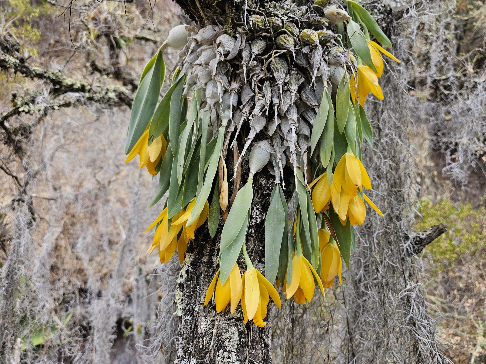

A Mexican endemic Prosthechea with pale, sculptural flowers and a strong connection to seasonally dry mountain forests.

Prosthechea karwinskii represents a different face of Mexican orchid diversity: not the saturated red-orange of P. vitellina, but a quieter, pale-flowered species adapted to Mexican mountain landscapes.
Plants form pseudobulbs bearing narrow leaves and produce star-like flowers with a pale green to cream ground colour. The floral form is typical of Prosthechea, with the column and lip arranged in a compact, mechanically precise pollination structure.
The species is associated with Mexican montane forests, including oak and pine-oak systems. These forests are often fragmented, grazed, burned or converted, so even species that appear locally persistent require better locality-level documentation.
Mexican endemic orchids such as P. karwinskii are often underrepresented in global conservation frameworks. They may not be famous in cultivation, but they carry information about the evolution of epiphytism, drought tolerance and reproductive specialisation in Mexican landscapes.
Orchidarc includes this species in the Digital Herbarium to build a broader, photographically documented baseline for Mexican orchids beyond the best-known charismatic taxa. Future updates will add field notes, habitat images and locality-level conservation context where publication is safe.